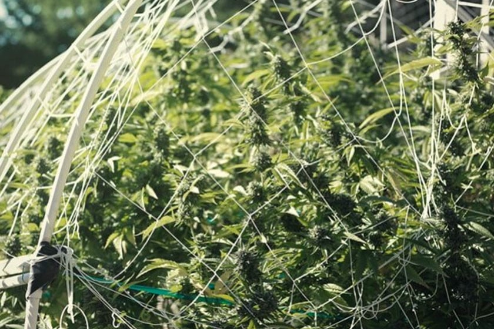

HighWires®
Who We Are
We are homegrowers with lots of problems.
Every stage of the grow has it's own issues that need to get fixed or worked around. Usually the solution involves using equipment designed for aquariums or lawn care, not the best fit for indoor growers. Ideas that work well in raised bed gardens rarely translate into a good tent solution, so problems are all solved "good enough" to get things growing. Not good.
A constant battle.

The biggest issue was always how to reinforce and support the individual plants as they mature, bulk up and put on weight. My beautiful plants were now bending all over the place, moving out of the light and falling over each other right when I wanted them to be getting the best light in order to develop rich colors and evenly mature all over. Basically just wasting the light that I had.
Trelling sucks.

Hard to setup, hard to work around and hard to deal with at harvest time. Maybe easier if you were ahead of things, but since I am usually reacting to things as they pop up I always had to work it around and over several plants. Then they were hard if not impossible to adjust and harvest was clumsy. And then it didn't seem to really help me like I wanted it too. Branches still fell over to the side when heavy, leaning on other branches with no good way adjust individual branches. Hate it.
That insanity is what led to HighWires.

I just couldn't stand fiddling with crap all of the time. I just want to relax, trim a little and enjoy watching them grow. That is such a nice part of it. I like to just sit and stare sometimes and not be bothered with a list of to-dos. Using HighWires I was able to add the right amount of reinforement to each branch when it needed it. They can be positioned exactly where I want them and they stay there. Done. I was able to use them throughout the grow cycle to train the branches to bend out more to allow light to penetrate all the way thru the canopy. Combine this with rigorous defoliating and what a difference. I was able to relax and watch my plants mature into bushes of buds.
How We Help Our Clients
 We offer a simple solution that you can use to fix problems supporting and training your plants.
We offer a simple solution that you can use to fix problems supporting and training your plants.
HighWires come in convenient sizes so you can work quickly without the need to find tools. They can mount right onto the tent pole so they are never out of reach.
Training your plants during veg and thru flowering you give you a dramatic increase in bud size, color and density. Allowing more airflow and more light to reach every part of your plant will maximize growth.
Plants love to train.
By having your plant trained properly, you will be able to control your plants growth like never before. By removing some of the stress you can focus on the important aspects, watching it grow.
Proof that what we do works
Testimonials
Should back up the claims made on the website
Statistics
- Authority builders
- Saved customers money / time
Show real person or team
People want to do business with other real people
- Photos
- Videos